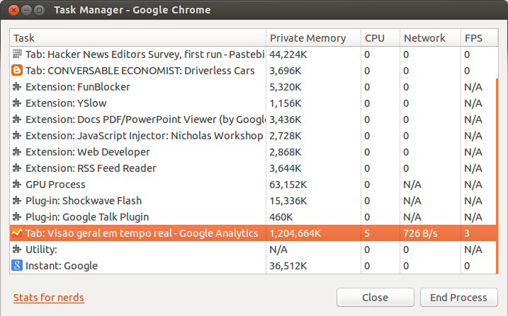

In last days, after I upgraded to Ubuntu 12.10 (it may be related with the issue or not), I experienced a weird slowness in the whole OS. Using top, I found a Chrome tab consuming around 1.2GB.
It was a tab with a Google Analytics realtime view. I keep this tab open almost all the time in a machine, so I know it is a memory consuming site, but I never saw something like that. I re-opened the same tab, which started with ~100MB and in a few hours it crashed again after consuming all virtual memory.
So far it was just a memory consuming application, but something is really wrong with Chrome or with Google Analytics. In both cases, it is Google fault.
I found another report, but it happened only after a week with Google Analytics realtime running.
I'll report this issue to Chromium project and I'll try to profile this tab with Chrome Developer Tools to get more information about the problem.
Take a look at my Google Chrome Task Manager:

Comments !